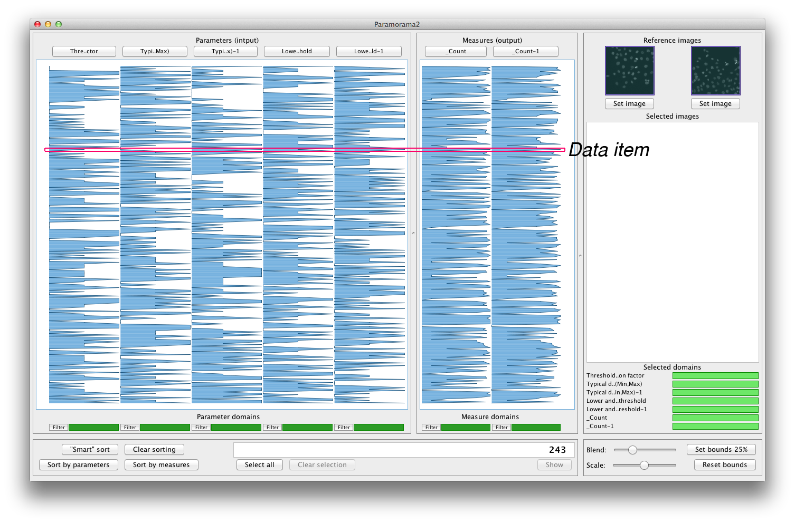
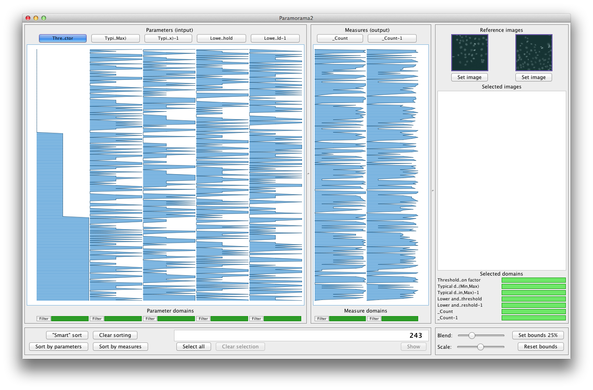
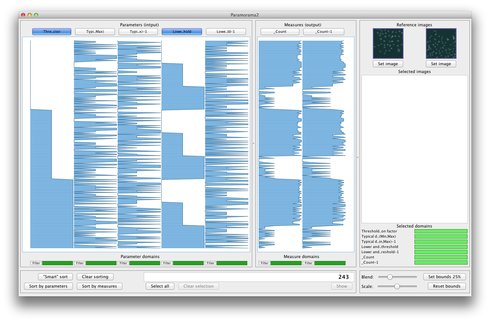
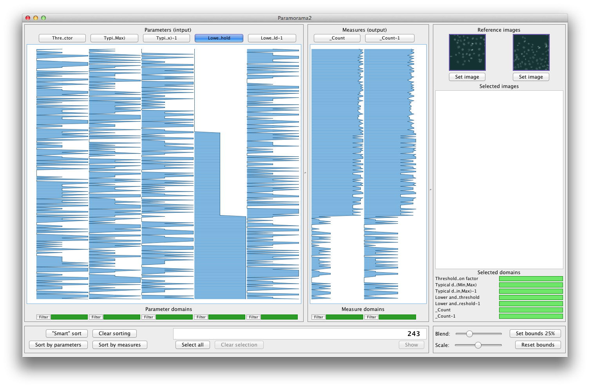

Introduction | Getting started | Sorting | Filtering | Selection | Download | Contact
(See video)
For instructions on how to obtain the sample data set, please see "getting started". Make sure you have the correct workspace and session loaded by completing the following steps. From the menu bar select
File > Load workspace
Navigate to "workspace.xml" and open it. Next, select
File > Load session
from the menu bar. Navigate to and select "session2.xml". You should see something like the following screen capture:

Remember that every execution of the image analysis algorithm (image segmentation of osteosarcoma cells in this case) is represented by a row in the data file. In Paramorama 2 each of these rows, or data items, is visualized as a row that spans across several columns. Every column represents either an input parameter (toward the left) or an output measure (toward the right). Where the row intersects each column, the value that it assumes for the corresponding parameter or output measure is encoded by the length of a bar (measured from the left). Low values are visualized by short bars, high values are visualized by long bars.
Paramorama 2 lets you to sort data items (the rows, corresponding to exections of the image analysis algorithm) by the values assumed for each column. For example, click on the button labeled "Threshold correction factor" at the top left of the UI (the label may be clipped to something like "Thre..ctor"). You should see the following:

Notice the step pattern in the first column. All data items have been sorted based on the three values assumed for the parameter "Threshold correction factor". It is possible to undo this sorting (clicking on the button labeled "Threshold correction factor again) or to continue sorting the data. Click on the button labeled "Lower and upper bounds on threshold" (it may be clipped to "Lowe..hold"). This should give you the following:

The initial sorting on "Threshold correction factor" has been maintained, but within each region where "Threshold correction factor" assumes a unique value, the data has been further sorted on "Lower and upper bounds on threshold". This gives three step-like patterns within each of the "steps" we obtained previously. Also notice that a pattern has emerged in the two columns toward the right (the output measures). This suggests a correlation between the output measures and the two input parameters that we have sorted on. These are the types patterns we are typically interested in finding with Paramorama 2.
Note that you can also sort on output measures, for example, to identify parameter combinations that produce very low or very high values for a measure of interest.
Two shortcuts are provided for sorting the data according to all the parameter columns (from left to the right), or according to all output measure columns (from left to rigth). To achieve this simply click on the buttons labeled "Sort by parameters" or "Sort by measures" at the bottom left of the interface. To change the order of the columns select
Columns > Reorder columns
from the menu bar. A dialog window will appear with a list of the columns in their current order. You can change this order by moving the column labels into the preferred order (either using the arrow buttons or by dragging and dropping).
You can also let Paramorama 2 identify the parameter column that is most closely correlated to the output measure columns. To do this, simply click on the button labeled "Smart sort" at the bottom left of the UI. You should see the following:

Can you see the striking correlation between those data items for which "Lower and upper bounds on threshold" (fourth column from left) takes its highest value and the two output measures toward the right?
Smart sorting only considers those data items (rows) that have not been filtered out (we will discuss filtering in the next section). This means that you can apply smart sorting, filter the data based on your insights and reapply smart sorting to reveal other parameters that have an important impact on the output measures.
This video shows what sorting looks like in Paramorama2. For full details, please see the description above.
(c) Copyright 2012, A.J. Pretorius. All rights reserved.